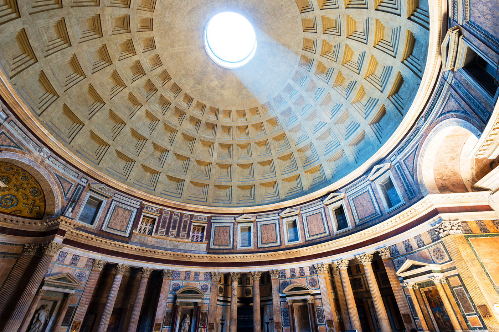
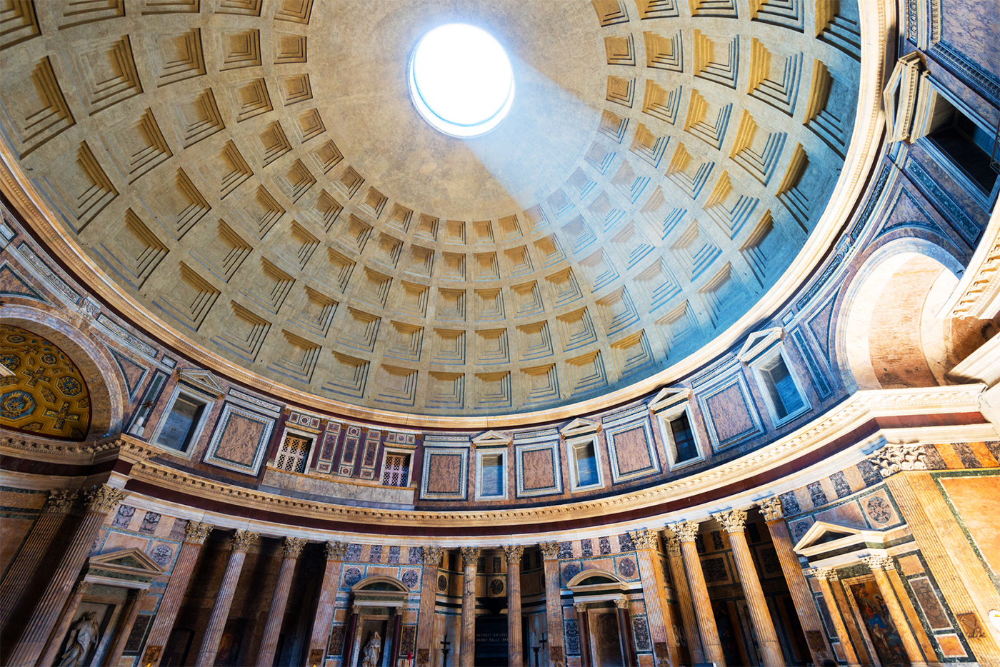

Roma
Roma, la Ciudad Eterna, es un lugar donde el pasado y el presente se entrelazan en un tapiz de historia, cultura y belleza. Ubicada a orillas del río Tíber, en la región de Lacio, Italia, Roma es una de las ciudades más antiguas y fascinantes del mundo. Desde su fundación legendaria hasta su papel como capital del Imperio Romano y su vibrante vida contemporánea, Roma sigue siendo un destino que cautiva a millones de visitantes cada año.
Historia y Patrimonio Cultural: Roma es un tesoro histórico que ha dejado una huella indeleble en la historia occidental. Desde la legendaria fundación de la ciudad por Rómulo y Remo hasta su ascenso como centro del Imperio Romano, la historia de Roma es fascinante y llena de acontecimientos significativos. Además de sus monumentos antiguos como el Coliseo y el Foro Romano, la ciudad también alberga una gran cantidad de ruinas y artefactos que narran la historia de su glorioso pasado. Incluso hoy en día, se pueden encontrar vestigios de su rico legado cultural en cada rincón de la ciudad.
Arquitectura y Belleza Urbana: La arquitectura de Roma es una fusión perfecta entre lo antiguo y lo moderno. Los majestuosos monumentos de la antigüedad, como el Coliseo y el Panteón, se mezclan armoniosamente con las estructuras renacentistas y barrocas que adornan la ciudad. Cada calle y plaza de Roma parece ser una obra maestra arquitectónica, con detalles ornamentales y una grandiosidad que deja a los visitantes maravillados. La belleza urbana de Roma es realmente incomparable, con su amplia variedad de estilos arquitectónicos que la convierten en un museo al aire libre.
Cultura y Arte: Roma ha sido durante siglos un centro de cultura y arte. Sus museos albergan algunas de las colecciones más impresionantes del mundo, que van desde arte clásico hasta obras maestras renacentistas y modernas. Los artistas y creadores de todas las épocas han encontrado inspiración en las calles de esta ciudad eterna, contribuyendo a su vibrante escena cultural. Además de los museos, Roma también es conocida por sus teatros, salas de conciertos y festivales, que ofrecen una amplia gama de experiencias culturales para disfrutar.
Gastronomía y Vida Nocturna: La gastronomía romana es una delicia para los amantes de la comida. Los sabores auténticos y las recetas tradicionales se combinan para crear una experiencia culinaria inolvidable. Desde los platos de pasta fresca hasta las pizzas horneadas en horno de leña, cada bocado en Roma es un placer para el paladar. Y cuando cae la noche, la ciudad cobra vida con una animada vida nocturna. Ya sea que prefieras relajarte en un bar con vistas al río Tíber o bailar hasta el amanecer en una discoteca elegante, Roma ofrece opciones para todos los gustos y estilos.
Encanto y Romance: Roma es sin duda uno de los destinos más románticos del mundo. Sus calles adoquinadas, plazas llenas de encanto y vistas panorámicas crean el escenario perfecto para el romance. Desde paseos nocturnos por el pintoresco barrio del Trastevere hasta cenas íntimas en acogedores restaurantes familiares, hay infinitas oportunidades para disfrutar del amor y la compañía de tu ser querido en esta ciudad eterna. Con su atmósfera mágica y su ambiente encantador, Roma es el destino ideal para aquellos que buscan un viaje lleno de romance y aventura.
 
